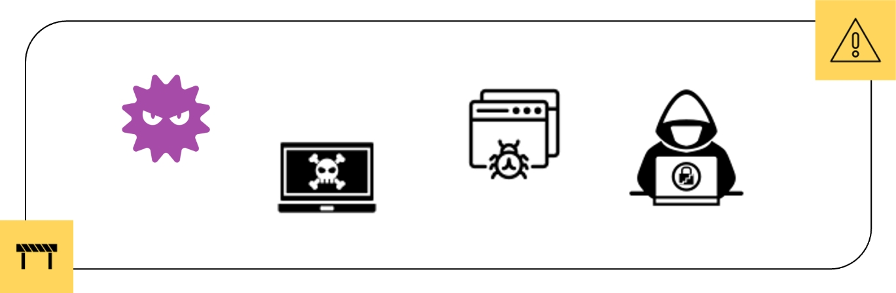

2-2-1. インシデント事例から学ぶ
デジタル社会が急速に発展し、インターネットが日常生活のあらゆる側面に浸透している現代において、情報セキュリティは最優先事項となっています。そのため、過去の重大インシデントから学び、脅威に対抗することが重要です。
不正アクセスやランサムウェアの暗号化による業務停止、システムの損失といった実際の事例から、何がうまく行かなかったのか、どのような手段が用いられたのか、どのような脆弱性が攻撃の対象となったのか理解することができます。これらの失敗から学ぶことは、理論的な知識だけでは得られない実践的な視点を身につけることができます。そして、実践的な視点を身につけることで、インシデントが発生した際の対応手順や新たなセキュリティポリシーの策定といった具体的な行動につながります。
インシデント事例から学ぶことは、情報セキュリティの向上に欠かせません。過去の事例を通じて、脅威に対する対応策の策定や現在使用しているリスク戦略の改善、セキュリティ意識の向上が可能です。その結果、組織や個人の情報を守り、将来起こり得るインシデントに適切な対応を行うことが可能となります。
インシデント事例

目的
インシデント事例を通して、実際に発生した攻撃事例やセキュリティインシデントをケーススタディを通じて学びます。具体的な知識を基に実践的なアプローチ手法を習得すること。
学べる内容
- 攻撃手法や攻撃者の手口
- インシデントの影響と被害範囲
- 具体的なインシデント対応と復旧策
活用例
- セキュリティリスク管理、対策の強化
- セキュリティポリシーの改善
- セキュリティインシデント対応の改善
- 脅威トレンドの把握、共有
- セキュリティ意識の向上